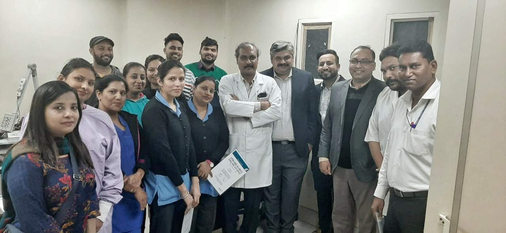
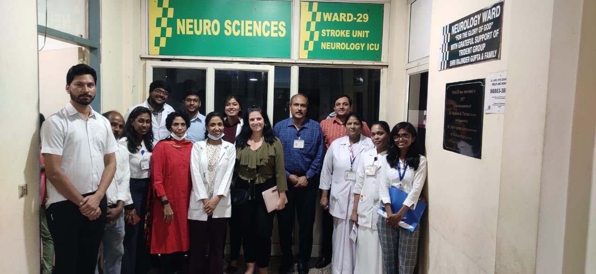

There is a story Dr Jeyaraj Pandian likes to tell, about a woman in her forties whom a severe stroke had left partly paralyzed. This woman had a 20-year-old daughter, a first-year college student with a promising future, who quit college to become her mother’s caregiver.
It is a story perhaps not uncommon in a country where stroke changes a life every 40 seconds, and 1.8 million new strokes occur every year. Here, as in other low- to middle-income countries (LMIC), a stroke can plunge a family into poverty or rob a young person of their future.
What makes this story significant, however, is that the stroke victim was Dr Pandian’s patient, and the implications for the woman’s college student daughter struck him with great force. It was a watershed moment for the young neurologist whose work in epilepsy was already attracting worldwide notice.
Stroke care was not developed in India, and although someone died of stroke every four minutes, and there was no high-quality research. Realizing the impact of stroke and disability on families made Dr Pandian change his focus and set him on a path that would eventually see him elected President of the World Stroke Organization (WSO).
First that path would lead to Brisbane, Australia, and a stroke fellowship at the Royal Brisbane and Women’s Hospital. Given the opportunity to remain in Australia, he nevertheless returned to India where he was by now determined to bring about change in stroke care and stroke research.
And as always the path lead to the Punjab city of Ludhiana and its Christian Medical College, which has become synonymous with his career. Moving to Ludhiana from Tamil Nadu in September 1990 when he was a newly qualified doctor was like moving from one country to another, Dr Pandian says. Punjab state was a new country with a different culture and a different language. But he was drawn there by CMC Ludhiana’s long history of Christian ethics and principled service dating back to its origins in 1894 as the first medical school for women in Asia.
Run by women for women until around 1953, it became a leading institution for medical education. A neurology department was added in 1988, two years before the young Dr Jeyaraj Pandian heeded its call – first as a trailblazer in epilepsy, eventually to grow the 129-year-old hospital into India’s first WSO certified stroke center.
CMC Ludhiana didn’t treat acute stroke until 2001 when Dr Pandian, back from a visit to stroke centres in the US, established its first three-bed stroke unit. Over the next three years, only five patients were treated with intravenous thrombolysis, but all that would change after Dr Pandian returned from Australia in 2007.

“Passionate, ambitious, tireless, engaging, pragmatic, generous, patient, and collaborative.” This is how a mentor and trial collaborator describes Dr Pandian in a research profile that appeared in The Lancet Neurology last February. Being profiled in the world’s leading clinical neurology journal is something he is very proud of, he says, naming it alongside the prestigious Global Stroke Services award the WSO conferred on him in 2020.
The research profile, as well as being an honour, carries a summary of more things to be proud of – such as models developed for stroke surveillance and care, and for physician-lead stroke units in rural areas, and leading the creation of a clinical trials network to grow research capacity and address India’s burden of stroke.
There is a great deal more. As President of the Indian Stroke Association from 2021, Dr Pandian pursued an ambitious program of prevention, education and stroke-centre certification. As Vice-President of the WSO since 2018 his projects included working with the WHO to implement a stroke care improvement program in Bhutan, Myanmar and other South-East Asian countries.
The WSO, of which he becomes the president in October 2024, is as much a part of Dr Pandian’s story as CMC Ludhiana. He joined its Board in 2008, the year after he returned from Australia. He has been a member of WSO Policy and Research Committees and has chaired its World Stroke Campaign International Working Group.
In 2016 he was co-chair of the World Stroke Congress, held for the first time in Hyderabad, India. The event provided a showcase for the contribution India could make to the global stroke community. The impact of Dr Pandian’s work in the region was impossible to overlook. That, along with his long association with the organisation, held off stiff competition when it came to choosing Prof Sheila Martins’ successor to lead the WSO. He is the first WSO president to come out of Asia. It is, he says, “great for India and great for me”.

Under his leadership, the emphasis will continue to be on mitigating inequity in stroke care, particularly as it impacts Africa and Asia. In the past four decades, stroke incidence in LMIC increased by more than 100 percent while decreasing by 42 percent in high income countries over the same period. It will be part of his strategy to secure funding from governments and philanthropists, to help address the unfair distribution of care and outcomes. “That’s my vision,” Dr Pandian says, “and I will try to do as much as possible.”
When he assumes the office in October 2024 he will become busier than ever as he strives for a balance between his new role, his deanship of CMC Ludhiana where he is also professor and head of neurology, his work in research, and the demands and pleasures of family life.
It’s almost 25 years since the fate of a 20-year-old college student alerted Dr Pandian to the impact of stroke and disability on families and caused him to pivot to stroke. “It’s been a difficult journey, but I can see the rewards of hard work,” he says. “Looking back, it has been a very rewarding experience.”